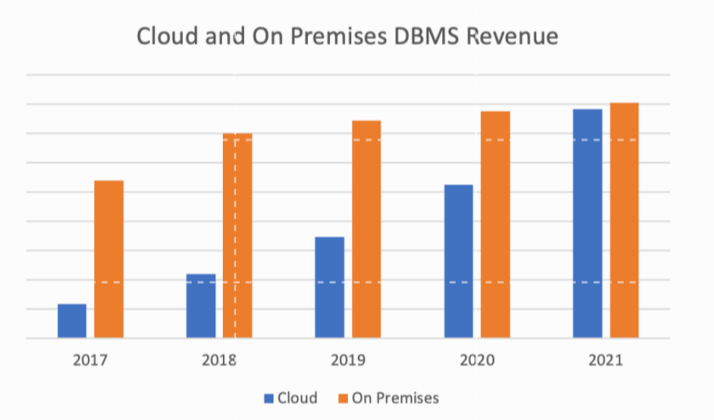
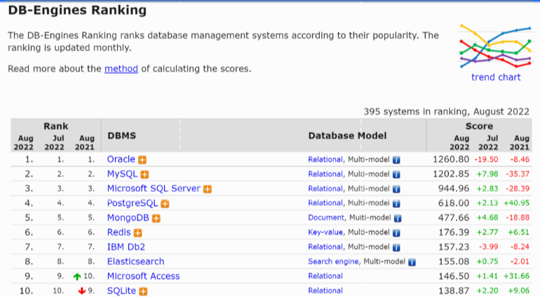

传统数据库走向消亡？
Oracle作为曾经世界上最大的数据库供应商，在过去享誉几十年。直到2022年，Gartner在报告中强调，当今世界最大的数据库供应商是微软，AWS位居第二。Oracle即便位居第三位，但过去的两年都有损失。
数据库市场的构造性转变是什么导致的呢？是云。

图片来自Gartner的《DBMS Market Transformation 2021: The Big Picture》
根据Gartner发布的2021年的软件市场收入数据显示，到2021年，托管云服务（dbPaaS）的收入升至392亿美元，目前占所有数据库管理系统（DBMS）收入的49%以上。
最近，Gartner的资深分析师Merv Adrian也表示：“最大的数据库市场故事，仍然是营收从传统数据库转向云带来的巨大影响”。这的确是对事实的陈述，但却并不完整，因为颠覆曾经稳定的数据库市场的不仅仅是云。相反，开源和云的结合，在管理数据的方式上的改变或许是永久的。
那么，云和开源的结合真的会吞噬数据库吗？可以从几个维度来探讨。
开源对传统数据库产生着作用
开源尚未出现时，许多企业长期向Oracle、微软和IBM等数据库缴纳了授权税。因此，在别无选择的情况下，开发人员只能使用法律或采购部门批准的软件。直到开源的出现，这一情形才逐渐得以改变。
1986年，PostgreSQL的第一个版本发布。1995年，MySQL发布。在MySQL的早期，它选择了一条明智的道路，为一系列新的应用程序提供了动力，成为著名的LAMP堆栈中的重要组成部分，许多开发者们用它来建立最初的网站。而那时的Oracle、SQL Server和DB2则选择了与开源截然相反的路线，在支持应用程度的储存对象时，采取较为严谨的方式为企业提供动力。
Gartner数据表明，开源数据库也在IT专业人群中得到了良好发展。
开源的本质，是通过个体协同来创造价值。开发者们能在开源的舞台上，尽情发挥自身技术长处，提升自身价值。因此，开发者们更喜欢开源数据库，因为开源为他们在构建方面提供了自由，开发者们不再受到法律和采购方面的束缚。当然，不止开发者们热衷于开源数据库。
云的诞生助力数据库的发展
那么，云的蓬勃发展是如何加速了数据库发展的进程呢？Merv Adrian曾宣称，“传统数据库中最大的力量是惯性”。或许正是有了传统数据库的惯性驱使，再一步一步给更加便利的云让位。
与来自小型社区和公司的开源不同，云计算带来的是数十亿美元的工程预算。云计算巨头们没有重新去开发开源数据库，而是接受了MySQL等数据库，并将它们转变为Amazon RDS等云服务。
正因如此，突然间MySQL等数据库具有了能为企业应用程序提供支持的工业影响力，Oracle和DB2却仍然落后于企业的ERP系统。
整体来看，对于大部分人而言，Apache Cassandra、MongoDB、MySQL、PostgreSQL等云数据库服务，正在为下一波互联网和企业应用提供了动力。
云的便利性和数据库市场
如果说开源是帮助开发人员获得所需软件的一种便利方式，那么云计算的出现，则再一次极大地提高开源的便利性。

图片来自DB-Engines：https://db-engines.com/en/ranking
根据DB-Engines对世界上最受欢迎的数据库排名显示，Oracle虽然在招聘信息、Google搜索等方面保持在首位，但在开源中，它的相对地位多年来一直是缺失的。而排名前50的数据库中，云数据库的名次上升是非常迅速的。
那些早期采用云的企业，往往已经呈现出良好的发展态势。
Merv Adrian指出，AWS的增长率大概是整个数据库市场的两倍，微软也在采用云后，使其市场率达到22.3%。相比之下，Oracle在云上的收入增长远远低于市场比率。前Gartner分析师Fintan Ryan表示，他在Gartner工作期间，几乎没有人提到Oracle在那段时间里的新应用。相反，客户在 “维持现有数据或迁移”的背景下常提到Oracle。
云给企业带来的良好发展态势，对企业的开发者们来说意味着什么？
第一，开发人员可以很容易地获得他们想要的数据库，并可以通过Google的BigQuery等管理服务轻松地运行它们。
第二，开发者们需要适应新品种的IT供应商。正如Ryan所说的，传统的IT公司可能不再是新工作负载的首选。当然，开发者们会因为某种程度上被困在旧工作负载的旧数据库上，尽管公司提供了一系列用于迁移到更现代的基于云的数据库的工具。但是，开发者们在考虑为企业提供未来动力的工作负载后，或许会与一类全新的数据库供应商合作。
事物的发展总具有两面性。总的来说，云和开源的结合，目前推动着数据库在时代中向前迈进步伐。但它们的结合是否会导致传统的数据库在无形中被吞噬？最后的答案需要交给时间。